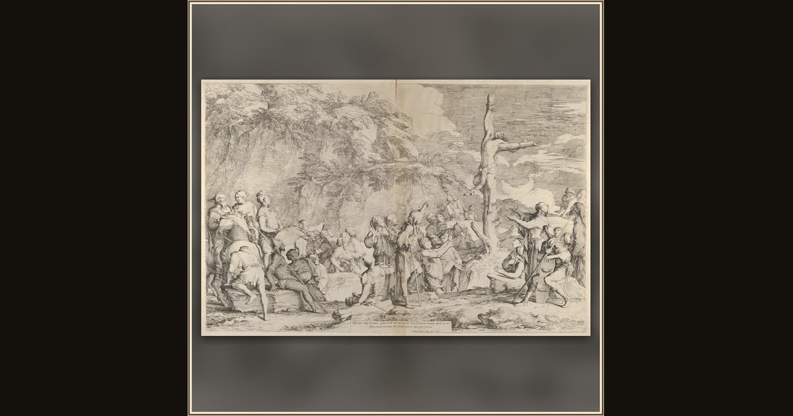

The crucifixion of Polycrates the tyrant after his capture by the Persians
Salvator Rosa · ca. 1662 · met
Salvator Rosa’s etching shows the body of Polycrates, tyrant of Samos, hanging on a tree-like cross before a crowd of onlookers after Oroetes had him killed (3.125.3) Explore its place in Herodotus's Histories, Book III, chapter 424.